„Когато се вглеждаш в природата, навсякъде виждаш числа. Но когато се
вгледаш в числата — понякога откриваш цялата природа.“
— Анонимен математик
Дали сме сами във Вселената? Защо листата на растенията следват
определени геометрични модели? Как мравките откриват най-краткия път до
храната, без GPS? И какво общо имат всички тези въпроси с математиката?
Оказва се, че животът — в най-широкия смисъл — може да бъде описан,
моделиран и дори предсказан чрез математически формули и структури. От
движението на хищник и плячка в джунглата, до симетрията на галактики и
възможността за съществуването на извънземен интелект — математиката не
просто присъства. Тя управлява, разказва и обяснява.
Ще разгледаме как статистиката и вероятността могат да изчислят шанса за
контакт с извънземни цивилизации и как с математика да разкрием някои
неподозирани аспекти на живота. Ще видим как уравнения описват борбата
за оцеляване между популации. Ще открием как алгоритми, вдъхновени от
природата, ни помагат да създаваме по-интелигентни технологии. И ще
проследим как фрактали и спирали свързват света на растенията със
законите на геометрията.
Тази тема не е просто „математика в биологията“. Това е математиката
като език на живота — на Земята и, може би, отвъд нея.
Сами ли сме във Вселената?
През втората половина на XX век, когато радиотелескопите започват да
надничат в дълбините на космоса, този въпрос престава да бъде само
предмет на научна фантастика и навлиза в сферата на изчислимото. През
1961 г. астрономът Франк Дрейк формулира уравнение, което се опитва да
оцени броя на технологично напреднали цивилизации в нашата галактика,
способни на междузвездна комуникация. Това уравнение става известно като
Уравнението на Дрейк. Неговата цел? Да изчисли броя на технологично
развити цивилизации в галактиката Млечен път, с които бихме могли да
установим контакт. Това уравнение комбинира астрономия, биология,
статистика и вероятности в една елегантна формула:
\( R_* \) — средният брой звезди, образувани годишно в галактиката
\( f_p \) — делът на тези звезди, които имат планети
\( n_e \) — средният брой планети на система, които могат да
поддържат живот
\( f_l \) — делът от тези планети, на които се развива живот
\( f_i \) — делът от планетите с живот, на които се развива
интелигентен живот
\( f_c \) — делът от тези цивилизации, които развиват технологии за
комуникация
\( L \) — средната продължителност на такъв технологичен живот (в
години)
На пръв поглед, уравнението изглежда прекалено спекулативно. Наистина,
някои от факторите – особено \( f_l \), \( f_i \), \( f_c \) и \( L \) –
са изключително трудни за измерване. Въпреки това, то играе ролята на
мисловна рамка, която позволява да бъдат формулирани хипотези, изградени
симулации и използвани методи на Бейсова статистика и Монте Карло
моделиране, за да се получат обосновани вероятностни сценарии.
Данни от NASA и Европейската космическа агенция (ESA), базирани на
наблюдения на звездни образувания в Млечния път, определят диапазонът в
литературата за \( R_* \) да е от 1 до 10 звезди/година (приблизително
7).
Данни от мисиите Kepler и TESS показват, че повече от половината звезди
имат планетни системи – при някои оценки дори над 70%. Избираме
консервативна средна стойност: \( f_p = 0.5 \).
Данни от модели на обитаемост (зона на Златокоска – обитаемата зона
около всяка звезда, в която на планета от земен тип е възможно
съществуването на вода в течна форма), при които се оценява, че много от
звездите с планети имат поне 1 в обитаемата зона: \( n_e \geq 1 \).
При делът на планетите, на които се развива живот, навлизаме в
хипотетична зона, защото единствената база за сравнение е Земята.
Изборът на: \( f_l = \frac{1}{3} \) е спекулативен, но често използван в
образователни и популярни симулации.
Калкулатор на уравнението на Дрейк
Резултат:—
Алтернативите варират от 1 (ако живот е неизбежен) до \(10^{-6}\) (ако е
изключително рядък). За интелигентен живот отново разполагаме само с
хипотези – Земята е единственият пример за еволюирал интелект. Някои
учени допускат, че интелигентният живот е изключение, не правило.
Приемаме: \( f_i = 0.01 \).
Възможно е някои интелигентни същества никога да не развият
радиокомуникация – културни, екологични или дори философски бариери.
Избираме 10% като предпазлива оценка за възможност за комуникация: \(
f_c = 0.1 \).
Средна продължителност на технологична цивилизация е най-спекулативната
стойност. Може да варира от под 100 години (ако цивилизациите се
самоунищожават) до милиони години (ако оцеляват стабилно). Избраната
стойност (1000 години) е умерено песимистична, отразяваща човешкия опит
до момента: \( L = 1000 \).
Когато извършим нужните сметки при тези стойности (които от много хора
биха могли да бъдат определени като силно спекулативни и нереалистични)
получаваме: $$ N = 1.16 $$ Приблизително една комуникираща цивилизация в
Млечния път – тоест ние.
Този резултат е удивително скромен, но силно зависим от стойността на L,
която често е най-спекулативният компонент. Моделирането на L включва
анализ на екзистенциални рискове, включително войни, изчерпване на
ресурси, климатични катастрофи или самоунищожение чрез технологии.
Съвременните анализи използват бейсова статистика, за да оценят
вероятността нашата цивилизация да е единствена. Дори при консервативни
стойности на параметрите, ако \(L>10^5\), вероятността да има поне още
една цивилизация става близка до 1. Това преобразува уравнението на
Дрейк от инструмент за „броене“ в логическа рамка за оценка на
космическия риск и бъдеще.
Франк Дрейк не е сам. Уравнението е вдъхновено от културна и научна
вълна през 60-те, когато стартира Проектът Ozma (първото търсене на
извънземни сигнали) и когато Карл Сейгън, Джил Тартер и други поставят
основите на SETI (Search for Extraterrestrial Intelligence). То остава
актуално и днес с мисии като TESS, Kepler и James Webb Space Telescope,
които ежедневно откриват нови екзопланети в т.нар. обитаема зона.
Знаете ли, че
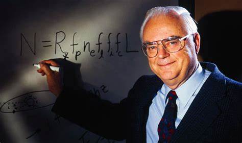
Франк Дрейк създал уравнението не за да дава
точни прогнози – то е било просто метод за структуриране на
дискусията по време на първата конференция за извънземен живот
през 1961 г.
Франк Дрейк
Знаете ли, че
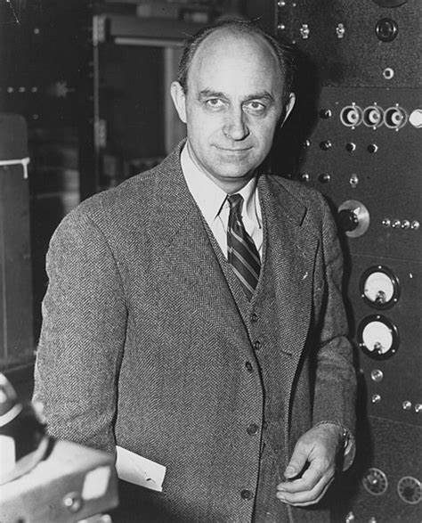
Парадоксът на Ферми – ако уравнението на Дрейк предполага, че
трябва да има много цивилизации, защо не сме ги открили? Един от
възможните отговори е „Големият филтър“ –
идеята, че има бариера, която повечето цивилизации не успяват да
преминат (пр. самоунищожение).
Енрико Ферми
Знаете ли, че
Проектът Ozma (1960) е първият опит за търсене на извънземни
сигнали. Радиотелескопът в Грийн Банк е насочен към две звезди –
Тау Кита и Епсилон Еридан, но не открива нищо. Името на проекта
идва от Принцеса Озма от „Вълшебникът от Оз“ – препратка към
търсенето на мистериозни светове
Принцеса Озма
Знаете ли, че
SETI веднъж засича мистериозен сигнал – през 1977 г. астрономът
Джери Еман открива „Wow! сигналът“, който идва от дълбокия
космос и има характеристики на изкуствено предаване. Никога не е
бил повторен и остава загадка до ден днешен.
Джери Еман
Природата рядко е в равновесие. Всяка жива система пулсира, трепти,
реагира. Когато броят на заекоподобни животни се увеличи, вълците
празнуват — за кратко. После броят на зайците пада, вълците гладуват, и
балансът се възстановява… до следващия цикъл. Тези динамични процеси
могат да бъдат описани математически, често с поразителна точност. Един
от най-елегантните примери за това е моделът на Лотка–Волтера,
формулиран независимо от Алфред Лотка (1925) и Вито Волтера (1926).
Този класически модел описва как две популации – например хищници и
плячка – си взаимодействат във времето чрез система от нелинейни
диференциални уравнения: \[ \begin{cases} \frac{dx}{dt} = \alpha x -
\beta xy \\ \frac{dy}{dt} = \delta xy - \gamma y \end{cases} \]
където
\( x(t) \) е популацията на плячката (например зайци)
\( y(t) \) е популацията на хищниците (например вълци)
\( \alpha \) е темп на растеж на плячката при липса на хищници
\( \beta \) – честота на среща и улавяне (влияние на хищниците върху
плячката)
\( \delta \) е ефективност на хранене – колко успешно хищниците
превръщат плячката в нови индивиди
\( \gamma \) е смъртност на хищниците при липса на плячка
Моделът Лотка–Волтера предвижда затворени орбити в т.нар. фазово
пространство \( (x, y) \). Какво ще рече това? Фазовото пространство е
графика, която показва как се променят брой хищници \((x)\) и брой
плячка \((y)\) във времето. Вместо да гледаме числата директно,
анализираме техните зависимости. Затворени орбити означава, че ако
нарисуваме как се променят двете популации една спрямо друга, движението
образува цикли, затворени криви. Например: Това означава, че при
определени начални условия популациите се колебаят периодично — без да
се унищожат или да нараснат безкрайно. Системата не търси равновесие, а
устойчив цикъл — точно както в реални екосистеми с годишни колебания на
числеността. Да речем, че когато има много плячка → хищниците се
увеличават, след това много хищници → плячката намалява, следва малко
плячка → хищниците започват да намаляват, а това значи по-малко хищници
→ плячката отново се увеличава и се завърта отново в този непрекъснат
цикъл.
Може би най-известната емпирична илюстрация на този модел идва от
данните на Hudson's Bay Company от 19-и век, която води статистика за
уловени рисове и снежни зайци. Данните показват ясен 10-годишен цикъл,
съвпадащ с предвижданията на уравненията на Лотка–Волтера. Макар
природата да е по-сложна от един модел, тези резултати потвърждават
нейната предсказуемост.
Моделът на Лотка–Волтера е елегантен, но оптимистично опростен. В
реалността плячката не расте експоненциално – има ресурсни ограничения
(логистичен растеж), тоест свъразани с наличните ресурси в средата.
Хищниците също не оцеляват безкрайно – има прагова смъртност. От друга
страна, средата може да се променя, появяват се трети видове (вируси,
паразити, човешка намеса).
Тези фактори водят до разширени модели например
Логистичен растеж на плячка:
$$ \frac{dx}{dt} = \alpha x \left(1 - \frac{x}{K} \right) - \beta x y $$
където \(K\) е капацитетът на околната среда.
Въвежда се и „функция на отговор“ за обработка на една плячка от хищник.
Така с допълнителни ограничения и допускания системата от прост
математически модел се превръща в жива картина пресъздаваща реалистична
динамика, включително толкова характерното за природата хаотично
поведение при определена стойност.
Някой би задал въпроса „Кому е нужно да правим математически модел като
можем да наблюдаваме на живо?“. Не винаги имаме възможност да проследим
всякакви популации и моделите ни дават допълнителна информация. Освен
това можем да изследваме стационарни точки за откриване на равновесия –
къде популациите остават стабилни, полезна информация за запазване на
застрашени видове, можем да изследваме рискови фактори чрез бифуркации –
промени в качественото поведение на системата при вариране на параметри,
за да открием най-подходящи условия. Можем да моделираме развитието и
преноса на вирус за предсказване на колапс или експлозии на популации.
Моделът Лотка–Волтера намира приложение и извън екологията - конкуренция
между два пазара или компании, вирус срещу антивирус — аналогия между
атакуващ и защитен агент в киберпространството, динамика между рак и
имунна система в онкологията. Математиката на „битката за оцеляване“ има
много лица. Възможностите са необятни.
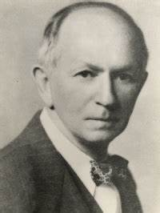
Алфред Лотка
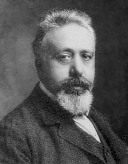
Вито Волтера
Знаете ли, че
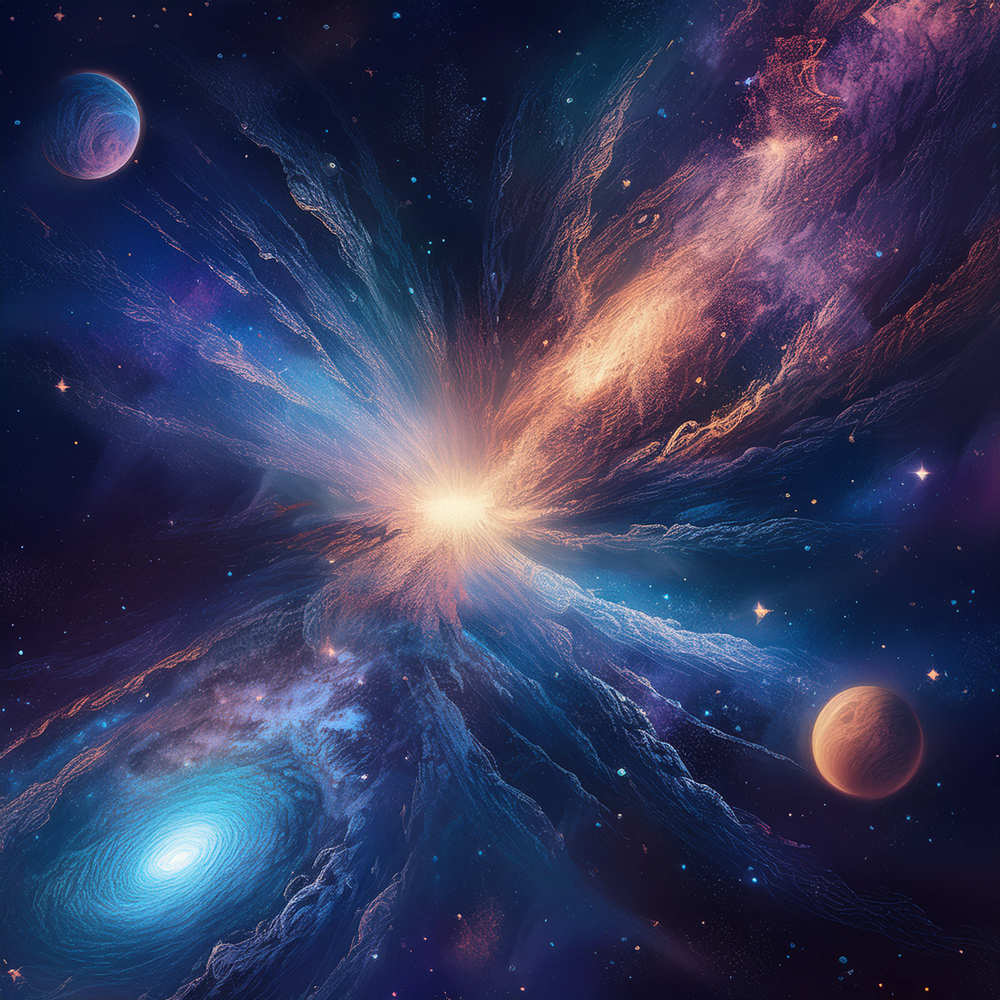
Уравненията на Лотка–Волтера не се използват само за хищници и
плячка. Те са приложими дори в моделиране на конкуренцията между
галактики – например как една галактика „поглъща“ друга.
Има дори модели на Лотка–Волтера, адаптирани за зомбита! В тях
„плячката“ са хората, а „хищниците“ – зомбитата. Ако хората се
защитават добре, зомбитата намаляват, но ако защитата отслабне,
броят на зомбитата отново нараства.
„Ние сме заобиколени от решения, тествани от милиони години
еволюция.“
– казва американската биоложка Джанин Бениъс, създател на термина
биомимикрия (biomimicry). Биомимикрията означава създаване на
технологии, вдъхновени от природни форми, процеси и системи, като те се
анализират не само естетически или функционално, но и математически.
Повърхността на листото от лотос вдъхновява самопочистващи се покрития.
Полетът на птици помага за оптимизация на дронове. А колективното
поведение на мравки и риби вдъхновява алгоритми за изкуствен интелект. И
зад всичко това стоят модели, уравнения и симулации.
Ефектът на лотоса. Листото на лотоса остава чисто дори в кал. Под
микроскоп се вижда, че повърхността му е покрита с микроскопични
наноструктури, които задържат въздух и отблъскват вода – т.нар.
суперхидрофобен ефект.
Математически това се моделира чрез ъгъла на контакт между капка и
повърхност: $$ \cos(\theta) = \frac{\gamma_{SG} -
\gamma_{SL}}{\gamma_{LG}} $$ Където:
\(\gamma_{SG}\): повърхностно напрежение между състояния твърдо–газ,
\(\gamma_{SL}\): твърдо–течно,
\(\gamma_{LG}\): течно–газ.
Тази формула (уравнението на Йънг) позволява прогнозиране на
водоотблъскващите свойства на повърхности, което е от критично значение
за аеродинамика, строителство и текстилни технологии.
Коприната от паяк е около 5 пъти по-здрава от стомана при същото тегло,
като притежава и уникална нелинейна еластичност – способността да се
разтяга многократно, без да се скъсва. Механичните ѝ свойства се
моделират чрез:
тензор на деформация \( \varepsilon_{ij} \),
тензор на напрежение \( \sigma_{ij} \),
конститутивни уравнения на нелинейна хипереластичност:
\[ \sigma_{ij} = \frac{\partial W}{\partial \varepsilon_{ij}} \] където
\( W \) е енергийна функция на деформацията (напр. на Нео-Хук или
Моони-Ривлин).
Какво означава тензор? Нека започнем от скалар – това е величина,
изразена само с число – примерно маса, дължина, плътност, температура и
т.н. Векторът е списък от числа, представящи скалар и имат посока – това
е например ускорение, сила, тежест и други. Матрицата таблица с числа,
които показват връзки между стойности - например таблица с оценки,
дължина на път между всеки две точки и други. Тензорът е величина –
обобщение на всичко по-горе, но за няколко измерения (може и само едно).
Конститутивното уравнение пък е математическо уравнение, което описва
връзката между напреженията и деформациите в даден материал. То определя
как материалът реагира на натоварване, като свързва тензора на
напрежението с тензора на деформацията. Енергийната функция на
деформацията описва как материалът съхранява енергията, когато се
деформира. При Нео-Хуковата функция моделът предполага, че материалът се
държи като гума – когато го разтегнеш, той натрупва енергия и се опитва
да се върне обратно. Моделът на Моони-Ривлин e по-прецизен, защото
отчита не само разтягането, но и усукването на материала. Използва се за
по-сложни еластични материали, като биологични тъкани и синтетични
полимери.
В крайна сметка, уравенението просто ни казва, че напрежението в
материала зависи от начина, по който той се деформира – колкото повече
се променя, толкова повече отговаря с напрежение. Това е като при
ластик: колкото повече го разтегнеш, толкова по-силно той се опитва да
се върне обратно!
Паяковите мрежи са пример за топологично оптимизирани структури –
минимизират материала, като същевременно разпределят напрежението при
натиск. Това се използва в архитектурата и 3D-печата на устойчиви
конструкции (напр. въглеродни решетки с фрактални усилвания).
Паяците ни дават още интересни възможности - микроскопичните власинки по
панцира (хитиновата обвивка) на някои видове паяци съдържат оптични
структури, които създават несъществуващи пигменти, т.е. цветовете се
дължат на дифракция и интерференция на светлината. За анализа им се
използват анализ на Фурие на повърхностната структура и трансформации на
Абел при реконструкция на радиални структури от 2D изображения.
Изучаването на тези структури води до безпигментни, но цветни материали
(екосъобразни бои, сензори, термочувствителни покрития).
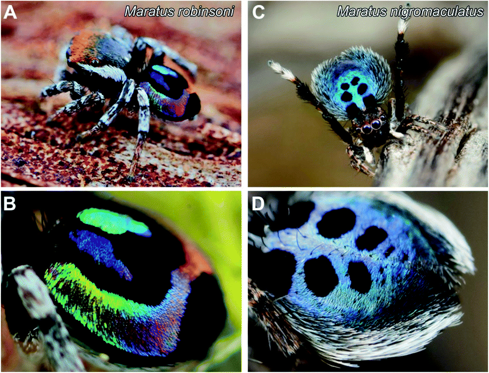
Оптични структури по панцира на паяк. Wang et al.,
Nanoscale Adv., 2020. Лиценз:
CC BY 3.0
През 1952 г. Алън Тюринг (да, същият Тюринг, създател на съвременната
теория на изчисленията) предлага, че животинските шарки – петна, ивици,
вълни – са резултат от реакционно-дифузионни процеси в развиващите се
тъкани. Реакционно-дифузионните процеси са механизъм, чрез който химични
реакции и дифузия взаимодействат, за да създадат сложни модели и
структури в развиващите се системи, като ембриони, биологични тъкани и
дори химически среди. Това води до система, чиято сложност излиза извън
пределите на четивото. Тази система включва концентрации на два
морфогена \( u \) и \( v \) (вещества, контролиращи развитието на
клетките), дифузионни коефициенти \( D_u \) и \( D_v \) (описват колко
бързо дадено вещество (морфоген) се разпространява в средата чрез
дифузия) и нелинейни реакции между тях.
В крайна сметка се установява, че ивиците на зебрите възникват от
инстабилност на хомогенната концентрация, която се разбива в периодични
вълни. Ако единият дифузионен коефициент е много по-малък от другия \(
D_u \ll D_v \), се получават линейни структури, тоест ивици. По-ниско
съотношение \( \frac{D_u}{D_v} \) води до появата на кръгли петна като
леопардовите шарки.
Рибата-зебра (Danio rerio) използва живи клетки като морфогени, които се
движат и взаимодействат със съседи чрез контактно въздействие – моделите
включват агент-базирани стохастични симулации. Това означава, че всяка
клетка се представя като отделен агент, взимащ самостоятелни решения и
така се изследват взаимодействията между тях.
Днес същите тези реакционно-дифузионни модели се използват в дизайна на
камуфлажни материи, архитектурни облицовки, и дори в козметика и дизайн
на спортни екипи (като екипите на колоездачи, при които шарките
въздействат на въздушната струя).
Тази симулация илюстрира как взаимодействието между два химични
морфогена (u и v) води до появата на разнообразни шарки — от петна и
вълни до ивици. Параметрите, които контролираш с плъзгачите, влияят
върху поведението на системата: Du и Dv определят колко бързо се
разпространяват морфогените u и v. По-голяма стойност означава по-бързо
разпространение и по-размазани шарки. F е скоростта на „хранене“ на
системата — колко активно се добавя u. По-голямо F води до по-бързо
възстановяване на u. k е скоростта на „убиване“ на v — колко бързо се
разгражда. По-голям k означава по-малко v и по-малки шарки. За да
добавиш ново огнище на реакция, просто цъкни върху платното — там се
появява точка с висока концентрация на v. Ако искаш да „рестартираш“
симулацията и да изчистиш шарките, премести някой от плъзгачите.
Октоподът (Octopus vulgaris и сродни видове) не само е сред
най-интелигентните безгръбначни животни – той е изключение в еволюцията
на мозъка. За разлика от централизираните мозъци при повечето животни,
при октоподите над 60% от невроните се намират в пипалата, а не в
централния мозък. Този уникален неврологичен дизайн вдъхновява
развитието на нов тип децентрализирани математически модели за контрол и
координация.
Мозъкът на октопода работи по подобие на графова мрежа от контролни
възли. Всеки крайник може да приема решения локално, но комуникира с
останалите чрез слабо синхронизирани сигнали. Това напомня
децентрализирани мрежи в роботиката и теория на графите, където всяко
пипало е възел (node) с входове и изходи.
Пипалата на октопода могат да извършват сложни движения без команди от
централния мозък. Това се моделира с невронни полета, при които
активността във всяка точка от пипалото зависи от локалното възбуждане и
съседната активност. Уравнението е известно като уравнение на невронното
поле тип Амари – Wilson-Cowan. То използва невронна активност в точка \(
x \) по пипалото в момент \( t \), функция на връзка (синаптична тежест)
между две точки, нелинейна активационна функция и външен вход (сензорна
информация). Уравнението е сложно не само от математическа, но и също
така от биологична гледна точка. Но благодарение на тази сложност се
дава възможност за създаване на мека роботика (soft robotics). Един от
най-известните проекти – робот-октопод, изграден от силикон, управляван
чрез локални контролни единици, работещи на принципа на
децентрализираната координация, е изграден благодарение на това
уравнение.
В природата няма централен „команден център“, но рояци пчели, мравки и
пасажи риби решават сложни задачи чрез прости правила. Това вдъхновява
роеви алгоритми (Swarm Intelligence), които използваме в роботиката,
изкуствения интелект и оптимизацията на маршрути (напр. логистика).
„Алгоритъм на мравките“ (или ACO) симулира движението на мравки, които
търсят храна и оставят следи от феромони. Най-краткият маршрут натрупва
повече феромон → по-висока вероятност да бъде следван. Формулата за
избор на път i→j е както следва: $$ P_{ij} =
\frac{(\tau_{ij})^{\alpha} \cdot (\eta_{ij})^{\beta}}{\sum_{k \in N_i}
(\tau_{ik})^{\alpha} \cdot (\eta_{ik})^{\beta}} $$ където:
\( \tau_{ij} \) – количество феромон на реброто (дъгата)
i→j
\( \eta_{ij} \) – евристична стойност (евристичната стойност е число
или функция, която ни помага да приближим решение на сложен проблем,
когато нямаме точен начин да го изчислим или изчислението е трудно)
\( \alpha \) и \( \beta \) – контролни параметри за значимостта на
феромоните и евристиката
Начално състояние на алгоритъма – мравките започват да търсят храна,
като се движат случайно. Оставяне на феромони – колкото по-кратък път
използват, толкова повече феромон се натрупва. Избор на следващо
движение – вероятността да изберат даден път зависи от формулата горе.
Изпарение на феромони – с времето следите отслабват, така че алгоритъмът
не се заключва в неподходящо решение. Оптимизация – след много итерации
най-добрите пътища остават с най-много феромони, и алгоритъмът намира
ефективно решение.
Тази формула е начин за моделиране на автономни системи, където няма
централен мозък, а множество „локални мозъчета“ и системата може да се
адаптира, защото феромоните могат да се променят с времето.
Други много популярни алгоритми са генетичните алгоритми. Те подражават
на естествения отбор. Решенията са кодирани като хромозоми, които се
борят да оцелеят до края на итерациите. Селекция, кръстосване и мутация
водят до по-добри решения. Функцията на пригодност (fitness function) \(
f(x) \) задава оценка на всяко решение \( x \). Селекцията се извършва
на база на оценките от функцията, като има различни начини – някои от
тях се грижат за запазване на разнообразието, а други акцентират на
най-добрите екземпляри. Мутацията променя дадена стойност или стойности
от вектора-хромозома, за да вкара разнообразие. Кръстосването
(crossover) е моментът, в който хромозомите се комбинират, за да се
получи следващото поколение. Процесът може да се представи като
еволюционна итерация: $$ P^{(t+1)} = \text{Select} \big( \text{Mutate} (
\text{Crossover}(P^{(t)}) ) \big) $$
Те намират приложение в инженерството, финансите, изкуствения интелект и
дори медицината, като генерират оптимални решения чрез процеси на
мутация, кръстосване и селекция. Например, NASA ги използва за
оптимизация на антени, които работят в екстремни условия, а
автомобилните компании ги прилагат за аеродинамичен дизайн, подобрявайки
горивната ефективност. В медицината генетичните алгоритми помагат за
разработване на персонализирани лекарства, анализирайки огромни
генетични бази данни. Дори в света на видео игрите те се използват за
автоматично създаване на игрови нива, адаптиране на поведението на
NPC-та и разработване на стратегии за AI противници. Еволюцията не е
само биологична – тя вече е част от технологиите!
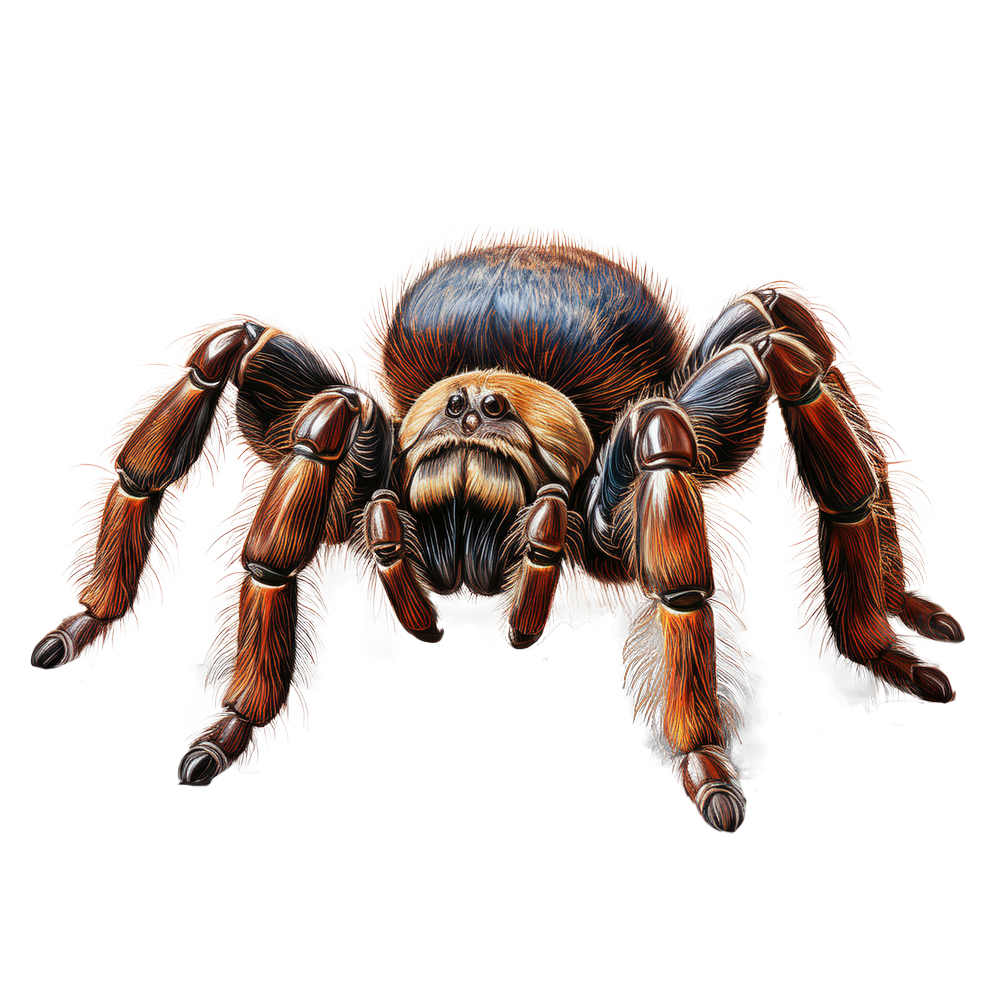
Алан Тюринг
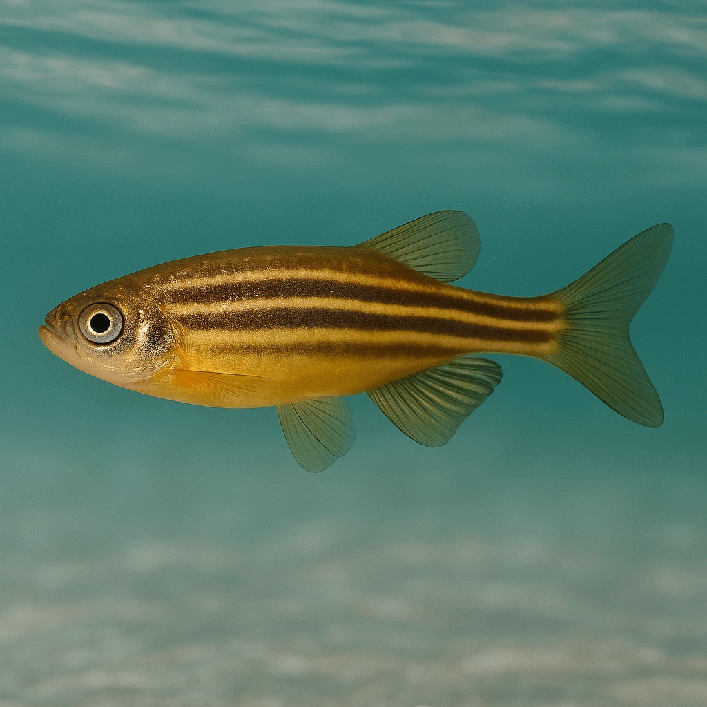
Риба зебра, сменяща цветовете си
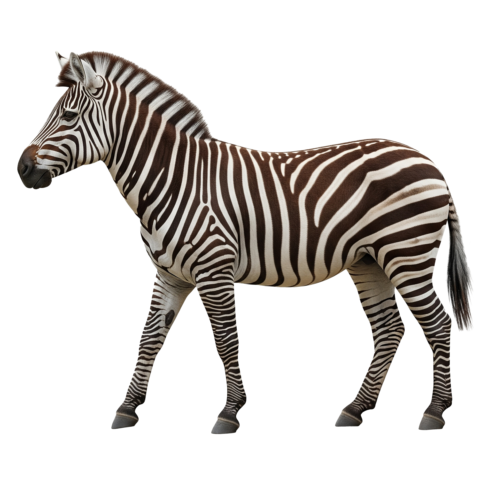
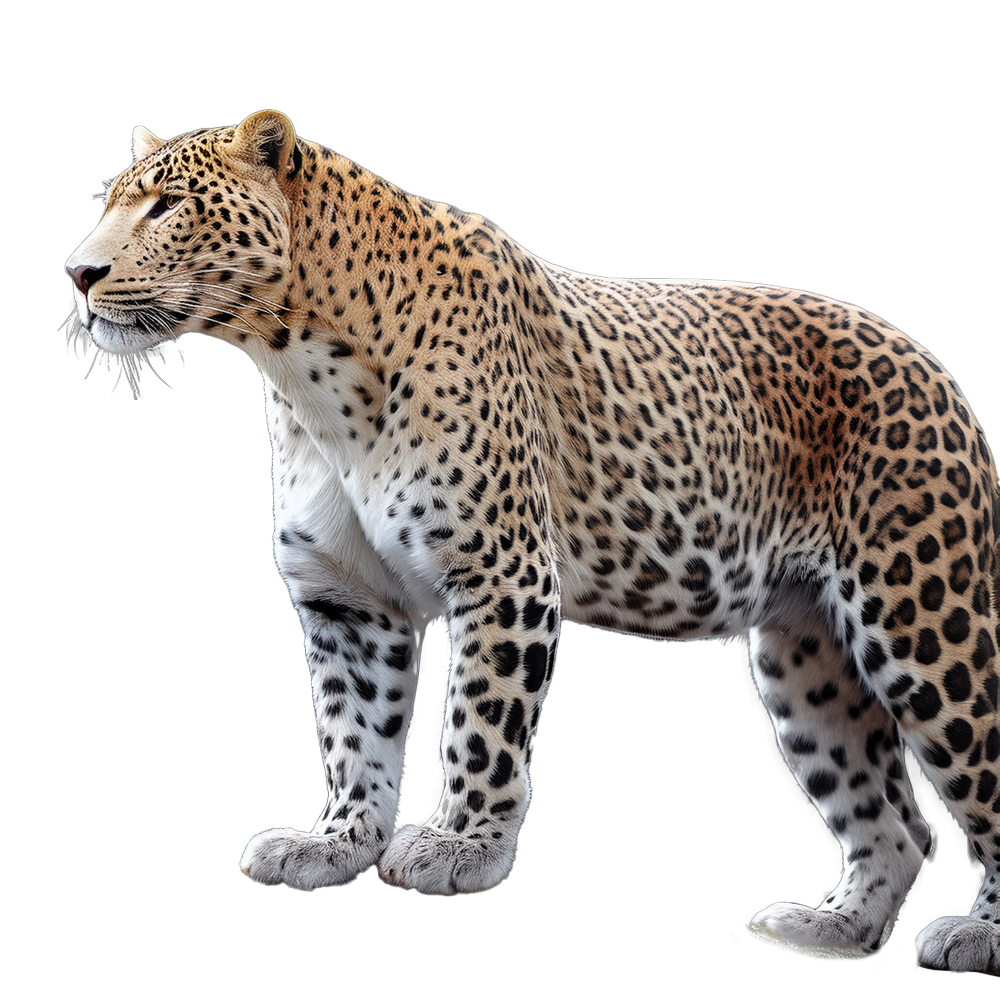
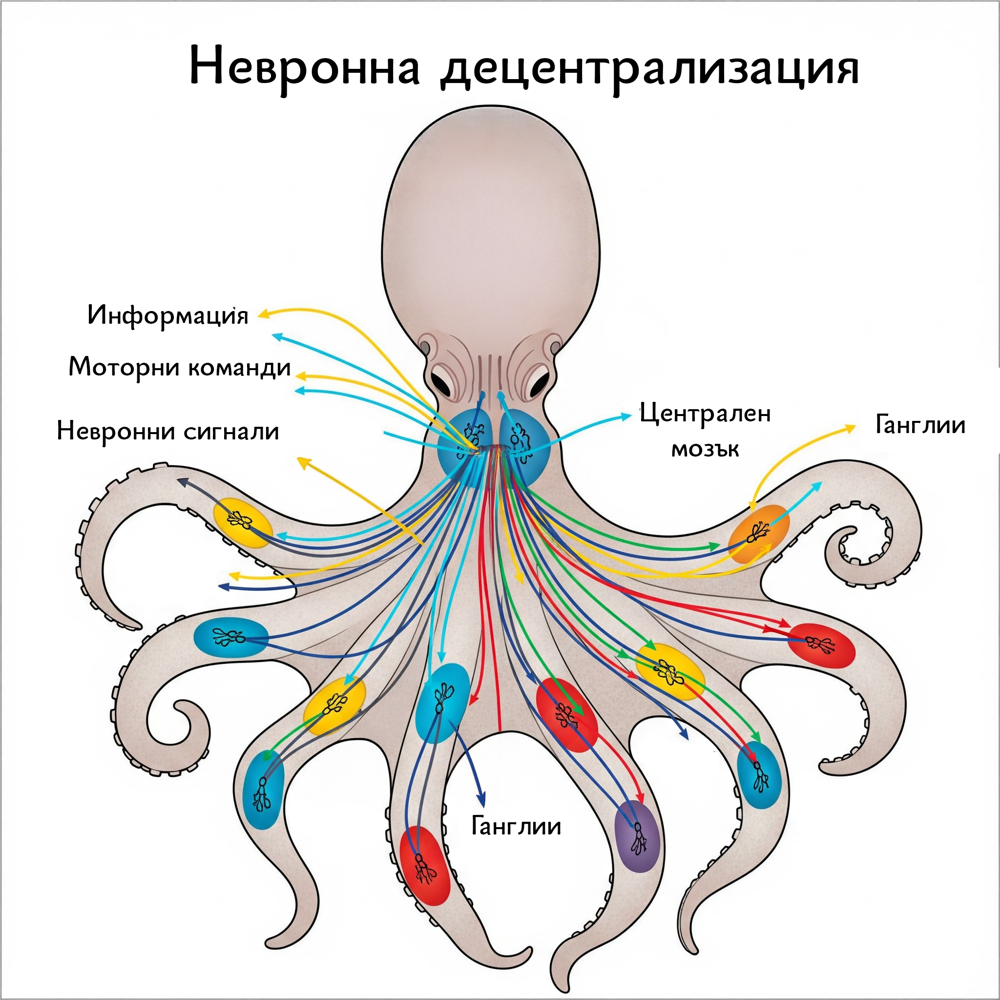
Невронна децентрализация при октопод
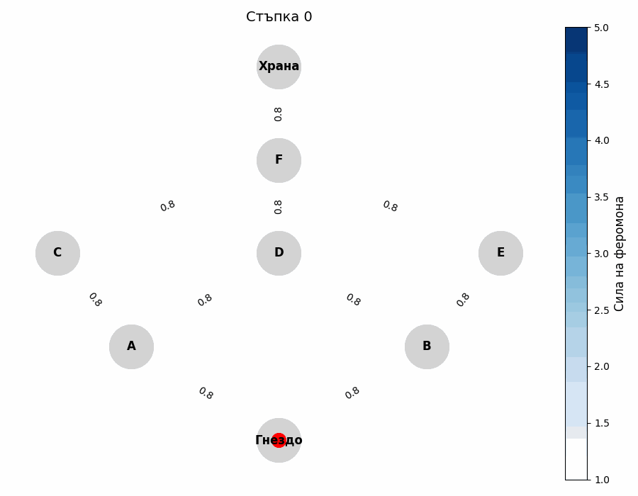
Симулация на алгоритъм ACO
Знаете ли, че
Уравненията на Лотка–Волтера не се използват само за хищници и
плячка. Те са приложими дори в моделиране на конкуренцията между
галактики – например как една галактика „поглъща“ друга.
Има дори модели на Лотка–Волтера, адаптирани за зомбита! В тях
„плячката“ са хората, а „хищниците“ – зомбитата. Ако хората се
защитават добре, зомбитата намаляват, но ако защитата отслабне,
броят на зомбитата отново нараства.
Живата и неживата природа са пълни с форми, които изглеждат хаотични и
произволни — но ако се вгледаме внимателно, ще открием закономерности.
Спирали, фрактали, симетрии и златни пропорции не са просто артистични
съвпадения — те са математически модели, които описват ефективност,
устойчивост и естетика, кодирани в природния свят.
Логаритмичната спирала е уникална с това, че формата ѝ остава една и
съща независимо от мащаба – затова често я наричат самоподобна.
Полярните координати са начин за представяне на точки в равнината чрез
разстояние и ъгъл, вместо чрез традиционните координати. Всяка точка се
определя с
\( r \) - разстоянието до началната точка (полюса) и
\( \theta \) - ъгълът спрямо фиксирана ос (например абсцисата).
Полярните координати са особено полезни за спирали, кръгове и радиални
симетрии, където описанието чрез абсциса и ордината би било по-сложно. В
полярни координати логаритмичната спирала се описва с уравнението: \[ r
= a e^{b \theta} \] Където \( r \) е радиусът, \( \theta \) е ъгълът, а
\( a \) и \( b \) са реални константи (контролират началната точка и
степента на "завиване").
Логаритмичните спирали в природата са много важни, тъй като се срещат в
множество естествени структури, които следват принципа на растеж и
оптимално разпределение. Черупките на охлюви и наутилуси използват този
модел за ефективно разширяване, като всяка следваща извивка е
пропорционална на предходната. Семките в слънчогледа се подреждат по
спирални редове, които осигуряват максимално запълване на
пространството, без празнини, следвайки същите математически правила.
Дори мащабни явления като циклоните и галактиките се формират под
влиянието на физични сили, но развиват спираловидна форма, която
подчинява хаоса в хармония.
Фракталите са други обекти, които имат самоподобие – т.е. частите
изглеждат като цялото, независимо от мащаба. Те често имат нецяло
(фрактално) измерение, различно от традиционните 1D, 2D или 3D форми.
Фракталното измерение е математическа концепция, която описва колко
ефективно дадена структура запълва пространството, но без да се
ограничава до цели числа като в 1D, 2D или 3D. Например, снежинката на
Кох има измерение около 1.26, защото е по-сложна от линия, но не запълва
напълно площта на 2D.
Математически фигурата се създава рекурсивно – чрез повтаряне на проста
трансформация. Това може да включва мащабиране (умаляване или
увеличаване на фигурата), транслация (изместване), ротация (завъртане),
копиране (вмъкване на копия на оригиналната фигура в нова позиция).
Нейната размерност се изчислява по следната формула: $$ D =
\frac{\log(N)}{\log(s)} $$ Където \( N \) е броят на самоподобните
части, а \(s\) е коефициентът на мащабиране.
Пример е Триъгълникът на Серпински (Sierpinski Triangle). Започваме с
равностранен триъгълник. Разделяме го на 4 по-малки равностранни
триъгълника и премахваме централния. Повтаряме същото за всеки от
останалите три триъгълника.
За една стъпка: \( N = 3 \) (остават три по-малки триъгълника), всеки
триъгълник е със страна наполовина по-малка → \( s = \frac{1}{2} \).
Размерността му е: \[ D = \frac{\log(3)}{\log(2)} \approx 1.5849 \]
Друг пример е Снежинката на Кох (Koch Snowflake). Започваме с отсечка.
Разделяме я на 3 равни части. Средната я заменяме с два нови сегмента,
които образуват триъгълник без основа. Повтаряме за всяка отсечка.
За една стъпка: \( N = 4 \) (четири нови отсечки), \( s = 3 \) (всяка е
\( \frac{1}{3} \) от дължината на оригинала).
Размерността ѝ е: \[ D = \frac{\log(4)}{\log(3)} \approx 1.2619 \]
Природата изглежда сложна и органична, но често следва елегантни
математически правила. Това не е съвпадение – еволюцията избира
ефективните структури, а те често са тези, които математиката вече е
описала. Други такива структури са златното сечение и редицата на
Фибоначи.
Златното сечение, наричано още божествена пропорция, е ирационалното
число:
\[ \varphi = \frac{1 + \sqrt{5}}{2} \approx 1.6180339887\ldots \] То
възниква, когато отношението между две дължини \( a > b \) е такова, че:
\[ \frac{a + b}{a} = \frac{a}{b} = \varphi \] Това условие създава
хармонично деление, което се използва от архитекти, художници, инженери
и природата. Изключително популярно е и във фотографията, където се
създават „перфектни“ снимки с негова помощ.
Редицата на Фибоначи:
\[ F_0 = 0,\quad F_1 = 1,\quad F_n = F_{n-1} + F_{n-2} \] дава
поредицата от числа: \[ 0,\ 1,\ 1,\ 2,\ 3,\ 5,\ 8,\ 13,\ 21,\ 34,\ 55,\
\ldots \] С нарастване на \( n \), отношението между съседни числа: \[
\frac{F_{n+1}}{F_n} \longrightarrow \varphi \] Това приближение никога
не стига точно до златното сечение \( \varphi \), но се доближава
удивително бързо.
Много растения нареждат листата си под ъгъл около 137.5° – това е
златният ъгъл, който е производен от златното сечение. Това подреждане
минимизира припокриването, максимизира достъпа до слънце и дъжд, често
води до спираловидни структури в цветя и шишарки, които следват числата
на Фибоначи 5, 8, 13, 21 и т.н. Този феномен се нарича филотаксис и може
да го откриете дори при вашите домашни цветя. Ананасите и артишоците
имат спирали, броят на които в едната и другата посока са съседни числа
от Фибоначи – например 8 и 13. Структурата се използва при някои модерни
експериментални фотоволтаични системи, като по същия начин като
слънчогледа и златното сечение се разполагат модулите, за да улавят
максимално слънчевата светлина.
Златните пропорции се срещат и в архитектурата и изкуството. Според
много изследвания, фасадата на Партенона използва златното сечение в
съотношенията между ширина и височина. Леонардо да Винчи пък използва
златното сечение във „Витрувианския човек“, а също и в пропорциите на
лицето – разстояние между очите, носа и устата.
Тези числа имат няколко много интересни употреби в съвремието. Фибоначи
кодиране (Fibonacci encoding) се използва в компютърни науки за
ефективно компресиране на информация в случаи на чести повтарящи се
структури. Фибоначи решетки се използват в нанофотонни устройства, които
имат квазикристална структура, но проявяват уникални свойства като
фотонен бандгеп – възможност да блокират определени дължини на вълните.
Структурата, вдъхновена от растения, се използва при някои модерни
експериментални фотоволтаични системи, като по същия начин като
слънчогледа и златното сечение се разполагат модулите и се преместват
хелиотропно, за да улавят максимално слънчевата светлина.
Знаете ли, че
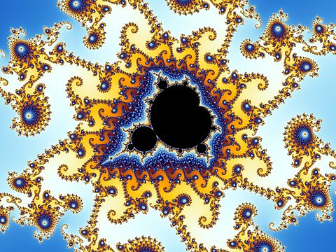
Понятието фрактал е въведено от Беноа Манделброт през 1975 г.,
вдъхновен от реални природни форми, които не се поддават на
класическа евклидова геометрия.
Фрактал
Знаете ли, че
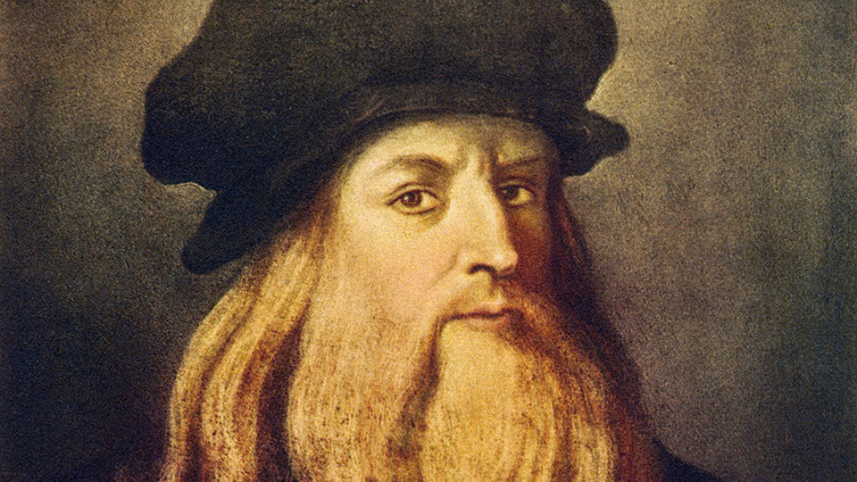
Леонардо да Винчи и Йоханес Кеплер още през XV–XVII век правят
връзки между спирали, златно сечение и природни форми. Леонардо
да Винчи използва златното сечение в своите произведения, като
например в Мона Лиза и Витрувианския човек, за да постигне
хармония и естетическо съвършенство.
Леонардо да Винчи
Черупка на охлювСлънчоглед
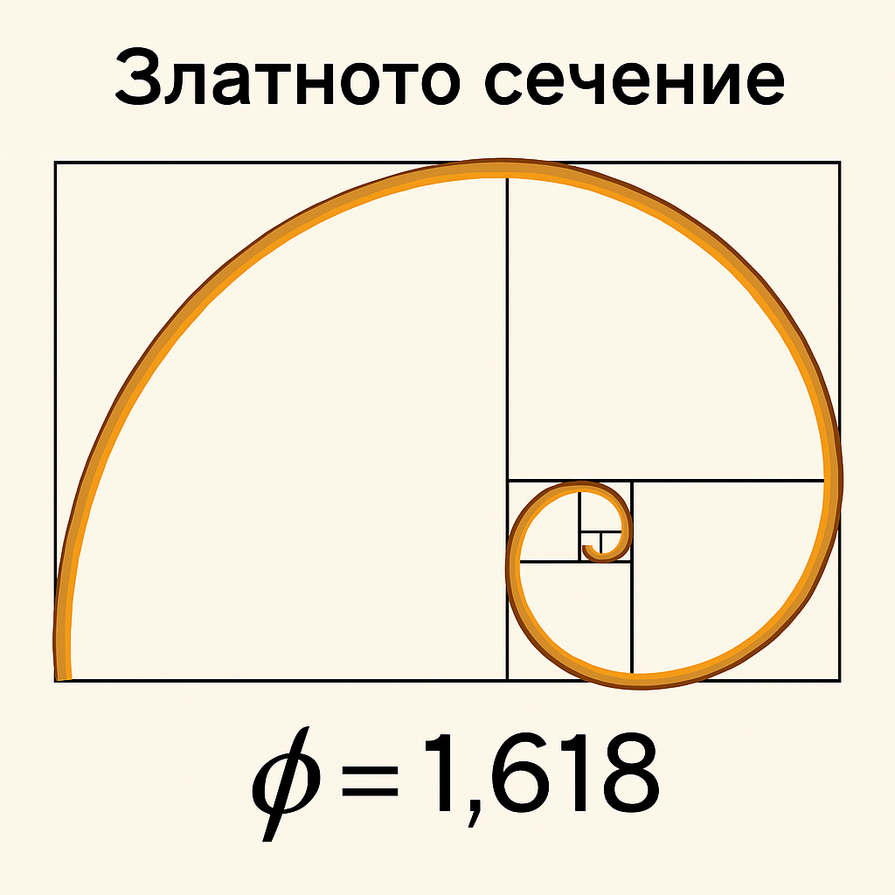
Златно сечение
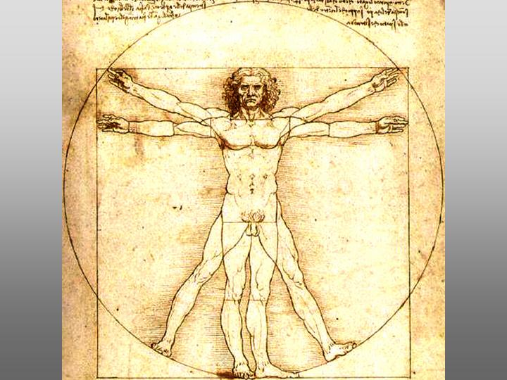
Витрувианския човекПартенона, Атина, Гърция
От моделирането на извънземния живот чрез уравнението на Дрейк, до
разкриването на природни стратегии чрез системи от диференциални
уравнения, фрактали и биомиметика — математиката ни показва, че
реалността е по-структурирана, отколкото изглежда.
Чрез нея можем не само да опишем симетрията на листо или орбитата на
планета, но и да предвидим поведението на популации, да проектираме
по-умни роботи или да открием хармонията в хаоса.
Тя е универсалният преводач между нашето разбиране и сложността на
света. А когато я комбинираме с любопитство и въображение, получаваме не
просто наука, а изкуство от формули – жив модел на Вселената.
Източници
Част 1
Drake, F. (1961). Project Ozma and the search for extraterrestrial
intelligence. Physics Today.
Bayesian inference from all-sky SETI surveys, Grimaldi, C., &
Marcy, G.
Tarter, J. (2001). The Search for Extraterrestrial Intelligence
(SETI). Annual Review of Astronomy and Astrophysics.
Част 2
Lotka, A. J. (1925). Elements of Physical Biology. Williams &
Wilkins.
Volterra, V. (1926). Fluctuations in the abundance of a species
considered mathematically. Nature.
Murray, J. D. (2002). Mathematical Biology I: An Introduction.
Springer.
Kendall, B. E. et al. (1999). Why do populations cycle? A
synthesis of statistical and mechanistic modeling approaches.
Ecology.
Hudson’s Bay Company fur return data (1820–1920)
Част 3
Vincent, J.F.V. et al. (2006). Biomimetics: its practice and
theory. J. Royal Society Interface.
Nakagaki, T. et al. (2000). Maze-solving by an amoeboid organism.
Nature.
Deb, K. (2001). Multi-objective optimization using evolutionary
algorithms. Wiley.
Ball, P. (2011). Shapes: Nature's Patterns: A Tapestry in Three
Parts. Oxford University Press.
Dorigo, M., & Birattari, M. (2010). Ant colony optimization. IEEE
Computational Intelligence Magazine.
Laschi, C., Mazzolai, B., & Cianchetti, M. (2016). Soft robotics:
Technologies and systems pushing the boundaries of robot
abilities. Science Robotics.
Част 4
Ian Stewart – Nature’s Numbers
Mandelbrot, B. (1982). The Fractal Geometry of Nature.
Livio, M. (2002). The Golden Ratio: The Story of Phi, the World's
Most Astonishing Number.
Douady, S., & Couder, Y. (1996). Phyllotaxis as a Physical
Self-Organized Growth Process. Physical Review Letters.
Nonogaki, H. (2019). Fibonacci phyllotaxis: Mechanisms and genetic
control. Trends in Plant Science.